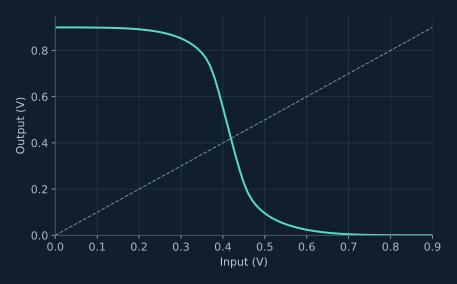

新用户先提供什么？
- 电路网表 / RNL，以及希望测什么；供电、激励、负载和目标与 Agent 讨论确认。
- 允许连接的 SSH 主机 / 路由，自己的正常登录权限。
- PDK 或环境脚本的已知线索、可搜索根目录；有多个候选时确认工艺与 corner。
- 实际运行所需的资源预算与执行授权。
只有模型名不能证明工艺身份或安全电压。Agent 不应凭旧会话里的私有路径替一个新用户补配置。
SPICEOWL / INDEPENDENT SIMULATION MANAGEMENT
SpiceOwl 是独立的仿真管理工具，通过自己的控制台、Agent 会话、CLI 和 Python SDK，帮助你检查服务器资源、配置 PDK、组织实验、监督长任务和分析结果。从“这台机器能不能跑”到“这次结果说明了什么”，让 Agent 有工具可用、有证据可查。
讨论目标
编写测试平台
解释证据并建议下一步
从 SpiceOwl 自己的控制台开始管理实验，也可以直接使用 CLI 与 Python SDK。需要与设计工作台协作时，再选择嵌入集成。
INTELLIGENCE WITH TOOLS
不为每一种模拟电路写死一个 TB 生成器。你与 Agent 定义问题，Agent 写实验，工具检查并执行明确的输入。
只有模型名不能证明工艺身份或安全电压。Agent 不应凭旧会话里的私有路径替一个新用户补配置。
“这里有一个反相器。帮我找可用服务器，配置模型，测瞬态翻转、DC 曲线和 AC 增益。”
读取端口和器件名；补问尚未确定的供电、负载、偏置与判据；检查被允许的环境线索。
探测主机与资源，扫描选定 PDK 范围，返回模型、section、端序、依赖证据和缺项。
解释候选并组织配置，编写 TB 与后处理；把完整输入、目标和待解决问题交给你审阅。
验证与冻结输入，交给执行后端；返回可查询的运行身份、日志与原始结果。
读取结果、调用分析工具，解释失败属于资源、模型、测试条件还是性能；提出具体下一步。
spiceowl serve --agent-mode standalone # 可显式指定已安装的 Codex / model # 完整环境接入还需绑定 client / SDK / PDK LUT
打开本机控制台 → Agent channel → Connect → New conversation → Send。认证由本机 Codex 管理；模型 / profile 来自配置。只读与纯计算工具可直接给结果，远端检查和执行按已配置权限审阅。
当前完整接入与远端执行通过配置的 CircuitGit Service / Runner 适配器完成，不要求使用其设计界面。操作员绑定后端 client 配置与 SDK；缺绑定时显示不可用。
用户不用再开一个平行聊天窗口；工具结果同步回同一个仿真面板。
CHECK CAPACITY BEFORE SUBMISSION
先显式扫描选中的主机，记录资源与时间；再按这次任务的 CPU / RAM 需求筛选。推荐结果不等于占到了资源。
92 / 128 GiB 内存可用
10 秒前采样 · 版本可用
90 / 128 GiB 内存可用
10 秒前采样 · 版本可用
100 / 128 GiB 内存可用
180 秒前采样 · 已过新鲜度限制
当前请求能保留规定余量；改变内存需求，观察为什么“看起来有空”的服务器也会被排除。
在 Simulation hosts 注册或选择明确的主机；检查 SSH 与主机身份，然后显式扫描所选池。Agent 可以调用 spiceowl_scan_resources 和 spiceowl_recommend_hosts，用结果解释选择，而不是凭机器名字猜空闲。
hosts scan hosts recommend --cpus 4 --memory-gib 8 --simulator spectre
上面是已配置 CLI 的子命令示意。完整命令需带自己的 state / 配置；页面不会执行命令。
CPU busy、1/5 分钟 load、可用与总内存、磁盘、工具版本、身份与观测时间。资源快照最多 120 秒，工具版本独立使用 24 小时窗口；CPU / load / 内存保留约 20% 余量。
这是当前实现的保守启发式。不是集群调度器预留，也不是速度预测；许可证、PDK 与实际输出目录仍需在提交前验证。缺失指标保持 unknown。
FROM MODEL NAMES TO A REPRODUCIBLE ENVIRONMENT
从电路需要的器件出发，让 Agent 组织发现和消歧，工具保留可复用的模型与依赖证据。
提取 model / subckt 名、端口和尺寸。名字只是线索，不直接证明工艺或额定电压。
探测选定服务器；读取明确环境 / 根目录线索，有限扫描候选入口与 include / section。
核对器件极性、端序、corner、依赖闭包和平台动态库。多候选需解释或用户确认。
缓存观测的元数据和哈希；下次按器件与范围查询。提交前复核，避免把旧缓存当成新验证。
电路要求 M9 → nch_ulvt_mac (d, g, s, b) M10 → pch_ulvt_mac (d, g, s, b) 配置输出 选定 entry + sections + corner 核对模型端序与平台依赖 保存观察范围与内容指纹
Agent 处理含义、选择和缺项；确定性工具提取与比较证据。通用流程依赖允许访问的环境，不假装仅从两行模型名就知道全部 PDK。
读取环境线索、扫描指定 PDK 根、解析 include / section 和模型包装。对找不到或有歧义的器件返回缺项；由 Agent 提议下一步或请用户补充范围。
LUT 缓存模型元数据与观测身份，不把专有 PDK 源码打包给每个客户端。缓存未覆盖、指纹变化或超期会明确 miss / stale，而不是悄悄套用另一台服务器的配置。
A JOB IS MORE THAN A SHELL COMMAND
测试平台与判据由你和 Agent 确认。冻结代码、模型、条件与预算后，现有执行后端完成远端操作。
monitor 在服务进程内持续查询原任务，保存最近成功观测和退避。默认观测间隔 30 秒、失败退避上限 300 秒；浏览器关闭不等于求解器被取消。
Agent 读取这些证据，解释进度、停滞和错误。现有 live watch 不自动收集、重提或改数值参数；workflow inspect 则可在确认终态后按既有回执收集。
服务必须保持运行。服务重启后需显式恢复 watch，或由操作员配置恢复已授权的监控。
INTELLIGENT MANAGEMENT NEEDS SEPARATE VERDICTS
智能化不只是看到失败就重跑。先区分连接、求解、测量、指标、模型工作条件和依赖，再给出可执行建议。
最后确认状态为 running，当前 SSH 查询失败。Agent 应保留 run / key，查看最近成功观测与原任务状态，不能把连接失败解释成求解器失败。
自动重启求解器、自动迁移任务、自动修复数值参数尚未形成完整实现；建议与实际执行权限分开。
REAL CASE / A BETTER SPECTRUM IS NOT THE WHOLE STORY

这证明这组确定性采样实验的频谱改善，不证明完整 ADC 精度或器件工作条件合格。
原日志已核对的实例 CMI-2752 · XDUT.M8 Vgs ≈ 999.947 mV vgs_max = 990 mV 执行结果：退出码 0 工作条件：出现 SOA 相关告警
Agent 应指出超限与分析范围，提出调整偏置或检查模型适用性的下一次实验；不能把“跑完”和“性能改善”合并成总通过。

NUMERICAL TOOLS THE AGENT CAN USE
Agent 选择合适方法、编写后处理；算法检查采样、单位与窗口。测量定义随实验保存。



已有数值库由 Agent 调用，不要求项目维护者给每种电路手写专用 TB 生成算法。测量条件不充分时保留未知，不用“有数值”冒充有效结论。
WHERE THE ENGINEERING WORK IS
SpiceOwl 的落脚点是辅助 Agent 管理仿真。资源、依赖、运行状态和科学结论需要一起维护，才能支持长时间实验。
分离连接和资源观测，检查身份、时效、CPU / RAM / load 余量；保留每个候选被排除的原因。
hosts / scheduling / circuitgit_pool有限扫描、include / section 依赖闭包、器件索引、平台动态库选择，SQLite 持久化与精确缓存范围。
onboarding / pdk_discovery / pdk_lut从任意明确电路源与 TB 出发检查绑定、输入、依赖和判据；不把目标锁死成预置反相器流程。
agent_tb / experiments提交 key、请求日记、原任务查询、持续监控与退避；连接出错不会自动创建另一个仿真。
live_client / workflow / monitor adapter许可、模型缺失、语法、SOA、尺寸与收敛分别分类；PSF 与数学工具保留分析身份和测量前提。
spectre_diagnostics / spectre_results / adctools独立控制台、Agent 会话、CLI 与 SDK 共用管理能力。需要嵌入设计环境时导出工具，复用宿主会话和原运行身份。
codex_bridge / standalone_agent / embedded| 能力 | 当前可以做到 | 仍需明确的边界 |
|---|---|---|
| Agent 辅助仿真 | 组织配置、写 TB、调用工具、解释结果 | 目标和运行条件需要确认；并非自动知道所有工艺与意图 |
| 持续监督 | 观察原任务，记录状态、事件和断连 | 服务持续运行；不等于自动恢复求解器 |
| 自动优化 / 恢复 | 可据证据提出下一步计划 | 自动迁移、重启与数值修复尚未完成 |
| 真实数据证据 | 本页三次 Spectre 原生结果、波形与复算 | 单独 Runner 补跑；不证明原向导或所有 Agent 功能已端到端验证 |
依据：server-pool.md、host-onboarding.md、pdk-lut.md、onboarding-boundaries.md、dual-mode-agent.md、standalone-runtime.md、workflow.md；资源互动由生产推荐函数在明确的合成样例上计算。
下面保留的是先前发布的向导快照与接口说明。其“等待审核 / 尚无结果”指该历史向导记录，不是上方单独补跑的实验。展开后可核对所有源文件与步骤。
FROM CIRCUIT TO EVIDENCE
Agent 帮你组织实验。确定性工具保存身份、检查依赖、计算结果。每一步都有输入、有输出，也有明确的停止条件。
本次脱敏快照未提供求解完成或 FFT 结果。下面的 JSON 是契约说明，不是服务回执。
awaiting_human_reviewEXPLORE THE PIPELINE
点击阶段；方向键可切换详情标签。
REVIEWED PUBLICATION MATERIAL
这些是已授权公开的派生副本，保留 publication 标记。源正文完整；新增的两行说明使公开副本与原始源具有不同 SHA-256。下载副本没有提交过仿真，不是 PDK 分发包。
DUT 的 @RNL 是源内几何注释；Bootstrap 的映射为 partial，不声称拥有独立的完整 Virtuoso 布局。公开材料不包含 PDK / TMI 二进制、标准头正文或私有回执身份。
CLEAR OWNERSHIP
聊天权限、配置选择与仿真执行授权分别保留。工具返回值和模型回答都不能替人签署审核。
| 阶段 | 用户 / 人工审核 | AI | 确定性引擎与执行所有者 | 禁止的行为 |
|---|
PROVENANCE, NOT A PERFORMANCE CLAIM
2026-11-24 的已审公开材料包含两个电路源、Bootstrap 冻结 TB 和手工白名单摘要。Bootstrap 的依赖静态审计匹配，revision 10 仍在等待人工审核；无 job、求解、波形或 FFT 结果。步骤 9 / 10 是 planned。
阶段输入 / 输出 JSON 仍是接口说明，原始私有 ID 保持空值。完整源与摘要可在上方核对；构建及测试对所有固定公开文件校验 SHA-256，不加载私有运行时。本页不会连接服务。
CircuitGit/lib/pipetisar-real/RS9_L5_9bit_Bootstrap/README.mdCircuitGit/lib/basics/cmos-inverter/README.mddocs/agent-testbench.md · TB 与 helper 契约docs/pdk-lut.md · 缓存和 section 审计docs/adctools.md · 测量定义与单位公开副本来源：CircuitGit workflow publication allowlist。没有复制私有 runtime dump；没有复用历史结果。接口已实现 / fake protocol 已测，与真实 provider 推理 unknown 分别标注。